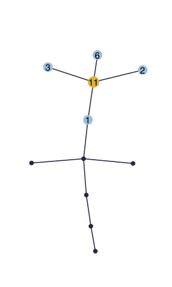

nestoris an R package for the inference of species interaction networks from their observed abundances, while accounting for possible unobserved missing actors in the data. It is an implementation of the tree-based VEM algorithm described in the preprint http://arxiv.org/abs/2007.14299.
Installation
EMtree dependency
nestor uses functions from the R package EMtree which development version is available from GitHub
devtools::install_github("Rmomal/EMtree")
CRAN dependencies
required_CRAN <- c("utils", "stats", "ROCR","graphics", "mvtnorm", "parallel", "gridExtra", "reshape2" ,"ggplot2", "magrittr", "dplyr", "tidyr", "tibble", "blockmodels", "mclust", "PLNmodels") not_installed_CRAN <- setdiff(required_CRAN, rownames(installed.packages())) if (length(not_installed_CRAN) > 0) install.packages(not_installed_CRAN)
Installation of nestor
You can install the development version from GitHub with:
devtools::install_github("Rmomal/nestor")
Usage
nestorsimulates data with the function missing_from_scratch(), which requires the desired type of dependency structure (scale-free, erdos or cluster) and the number of missing actors r. Here is an example with r=1for the scale-free structure:
library(nestor) set.seed(1) data=missing_from_scratch(n=100,p=10,r=1,type="scale-free", plot=TRUE)

The original clique of the missing actor neighbors is available in the value TC:
data$TC #> [[1]] #> [1] 1 2 3 6
The data is then prepared for analysis with the first step of the procedure: fit the PLN model. The norm_PLN()function is a wraper to PLNmodels::PLN() which normalizes all the necessary outputs, namely the means, variance and correlation matrices of the model latent Gaussian layer corresponding to observed species.
PLNfit<-norm_PLN(data$Y) #> #> Initialization... #> Adjusting a PLN model with full covariance model #> Post-treatments... #> DONE! MO<-PLNfit$MO SO<-PLNfit$SO sigma_obs=PLNfit$sigma_obs
nestor then needs to be initialized. This requires to find an initial clique of neighbors for the missing actor:
initClique= FitSparsePCA(data$Y,r=1)$cliques
or a list of several possible cliques, for example using complement_spca(). The nestor package also provides with a bootstraped version of sPCA boot_FitSparsePCA(), and the function init_blockmodels() which uses package blockmodels.
six_cliques= complement_spca(data$Y, k=3) six_cliques #> [[1]] #> [[1]][[1]] #> [1] 3 6 8 #> #> #> [[2]] #> [[2]][[1]] #> [1] 2 9 #> #> #> [[3]] #> [[3]][[1]] #> [1] 9 10 #> #> #> [[4]] #> [[4]][[1]] #> [1] 1 2 4 5 7 9 10 #> #> #> [[5]] #> [[5]][[1]] #> [1] 1 3 4 5 6 7 8 10 #> #> #> [[6]] #> [[6]][[1]] #> [1] 1 2 3 4 5 6 7 8
Once an initial clique has been found, the algorithm can be initialized.This is the aim of the function initVEM(), which initializes all required parameters. This function builds one initialization from one initial clique. In this example we run the oracle procedure: the initialization is done with the true clique.
initList=initVEM(data$Y,cliqueList=data$TC,cov2cor(sigma_obs), MO,r=1 ) str(initList) #> List of 4 #> $ Wginit : num [1:11, 1:11] 0 0.00826 0.00826 0.00826 0.00826 ... #> $ Winit : num [1:11, 1:11] 0 0.00826 0.00826 0.00826 0.00826 ... #> $ omegainit: num [1:11, 1:11] 3.4633 1.2964 1.9354 0.7364 -0.0652 ... #> ..- attr(*, "dimnames")=List of 2 #> .. ..$ : chr [1:11] "Y1" "Y2" "Y3" "Y4" ... #> .. ..$ : chr [1:11] "Y1" "Y2" "Y3" "Y4" ... #> $ MHinit : num [1:100, 1] 0.368 0.248 -0.404 -0.802 -1.893 ...
The core function nestor() can now be run as follows:
fit=nestor(data$Y, MO,SO, initList=initList,alpha=0.1,eps=1e-3, maxIter=30,verbatim = FALSE, trackJ=FALSE)
This package contains several visualization functions. plotPerf() gives a quick overview of the fit performance compared to initial graph:
plotPerf(fit$Pg, data$G,r=1)

The convergence of nestor() can be checked with the plotting function plotConv():
plotConv(nestorFit = fit)

This package provides with a parllel procedure for the computation of several fits of nestor() corresponding to a list of possible cliques, with the function List.nestor(). Below is an example with the list of four cliques previously obtained with the complement_spca() function:
fitList=List.nestor(six_cliques, data$Y,cov2cor(sigma_obs), MO,SO,r=1,eps=1e-3, maxIter = 50, alpha=0.1) do.call(rbind,lapply(fitList, length)) #> [,1] #> [1,] 3 #> [2,] 3 #> [3,] 12 #> [4,] 12 #> [5,] 3 #> [6,] 12
The object fitList is simply the list of all the nestor() fits. This procedure aborts in case of degenerated behaviour, which happens when the provided clique is too far from truth. Wrong fits can be spotted by their ouput size, as above. We can know see the behaviour of the lowerbound final values with the AUC of each converged fit: